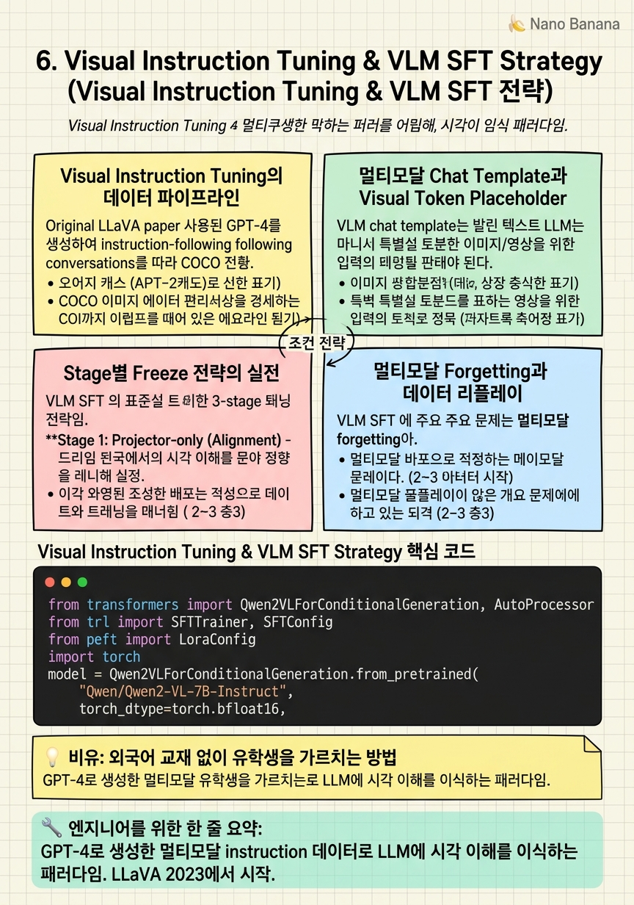

Visual Instruction Tuning & VLM SFT Strategy

🎯 학습 목표
- LLaVA 스타일 visual instruction tuning의 데이터 구성과 훈련 단계를 설명할 수 있다
- 멀티모달 SFT에서 텍스트, 이미지, 비디오 데이터의 혼합 비율을 결정하는 방법을 제시할 수 있다
- VLM에서 LoRA 적용 시 어떤 모듈에 적용하는지, 그 이유를 설명할 수 있다
- 멀티모달 chat template에서 visual token placeholder가 어떻게 처리되는지 설명할 수 있다
- VLM SFT에서 발생하는 forgetting 문제와 대응 방법을 설명할 수 있다
Visual Instruction Tuning은 LLaVA(2023)에서 처음 체계화된 VLM 훈련 패러다임이다. 핵심 아이디어는 GPT-4로 생성한 멀티모달 instruction-following 데이터를 사용하여, 사람의 지시에 따라 이미지를 이해하고 응답하는 능력을 LLM에 이식하는 것이다.
VLM SFT는 순수 텍스트 SFT에 비해 세 가지 복잡성이 추가된다. 첫째, 멀티모달 데이터 구성: 이미지 캡션, VQA, OCR, 차트 이해, 비디오 이해 등 다양한 태스크 데이터를 어떤 비율로 혼합할 것인가. 둘째, 모듈별 freeze 전략: 각 훈련 단계에서 어떤 모듈을 업데이트할 것인가. 셋째, 멀티모달 forgetting: VLM SFT 후 텍스트 전용 능력이 저하되는 문제.
이 챕터에서는 Qwen3-VL을 기반으로 VLM SFT의 실전 파이프라인을 구체적으로 다룬다. 특히 temporal grounding 같은 특화 태스크를 위한 SFT 데이터 구성과 훈련 전략에 초점을 맞춘다.
핵심 내용
Visual Instruction Tuning의 데이터 파이프라인
LLaVA 원 논문은 GPT-4를 사용해 COCO 이미지 캡션을 바탕으로 instruction-following 대화를 생성했다. '이 이미지에서 무슨 일이 일어나고 있나요?'부터 '특정 물체의 색깔이 무엇인가요?'까지 다양한 유형의 질문을 자동 생성했다.
현재 VLM SFT 데이터는 여러 소스를 혼합한다:
| 데이터 유형 | 목적 | 예시 비율 |
|---|---|---|
| Image caption | 기본 시각 이해 | 20% |
| VQA (Visual QA) | 이미지 기반 질의응답 | 20% |
| OCR / Document | 텍스트 인식, 문서 이해 | 15% |
| Chart/Diagram | 구조 정보 이해 | 10% |
| Video QA | 비디오 이해 | 15% |
| Instruction following | 복잡한 멀티스텝 지시 | 20% |
데이터 품질 기준: 단순 Yes/No 응답이 아닌 설명이 포함된 응답, 이미지 없이 텍스트만으로 답할 수 없는 질문(visual grounding 필수), 다양한 해상도와 콘텐츠 타입의 균형.
멀티모달 Chat Template과 Visual Token Placeholder
VLM의 chat template은 텍스트 LLM과 달리 이미지/비디오 입력을 나타내는 특수 토큰을 포함한다. Qwen2-VL/Qwen3-VL의 멀티모달 template 예시:
`
<|im_start|>user
<|vision_start|><|image_pad|>...<|image_pad|><|vision_end|>
이 이미지에서 무슨 물체가 있나요?<|im_end|>
<|im_start|>assistant
이미지에는...<|im_end|>
`
<|image_pad|> 토큰들이 visual encoder output을 대체한다. 실제 훈련에서는:
1. 이미지 → vision encoder → patch features (N × D)
2. Projector → visual tokens (N × LLM_dim)
3. <|image_pad|> 위치에 visual token을 삽입하여 최종 input_embeds 생성
4. Loss는 assistant 응답 부분에만 계산
중요: visual token에는 loss가 계산되지 않는다. 이미지를 '이해'하는 것은 응답 생성 과정에서 attention을 통해 이루어지며, visual token 자체의 예측은 훈련 목표가 아니다.
Stage별 Freeze 전략의 실전
VLM SFT의 표준 3-stage 훈련 전략:
Stage 1: Projector-only (Alignment) - Vision encoder: 🔒 Freeze - Projector: ✓ 훈련 - LLM: 🔒 Freeze - 데이터: 대규모 image-caption pairs (LAION, CC3M, etc.) - 목적: projector가 visual feature를 LLM이 이해할 수 있는 embedding으로 변환하는 기본 mapping 학습 - 학습률: 높게 설정 가능 (LLM freeze이므로 catastrophic forgetting 위험 없음)
Stage 2: Full VLM SFT - Vision encoder: 🔒 Freeze - Projector: ✓ 훈련 - LLM: ✓ 훈련 (LoRA 또는 Full) - 데이터: 고품질 멀티모달 instruction 데이터 - 목적: 복잡한 멀티모달 이해와 instruction following 학습 - 학습률: 낮게 설정 (catastrophic forgetting 방지)
Stage 3 (선택적): Task-specific SFT - Vision encoder: 🔒 Freeze - Projector: ✓ 훈련 (소량) - LLM: ✓ LoRA 훈련 - 데이터: 특정 태스크 고품질 데이터 (예: temporal grounding) - 목적: 특화 태스크 성능 극대화
멀티모달 Forgetting과 데이터 리플레이
VLM SFT의 주요 문제 중 하나는 멀티모달 forgetting이다. 특정 태스크(예: temporal grounding)에 특화된 SFT 후 일반 VQA 성능이 저하되는 현상이다.
원인: 태스크 특화 데이터로 훈련하면 LLM의 일반 능력이 특화 패턴으로 덮어씌워진다. 이는 순수 텍스트 LLM에서 발생하는 catastrophic forgetting과 같은 메커니즘이다.
대응 방법:
데이터 리플레이: 태스크 특화 데이터에 일반 VQA/instruction 데이터를 혼합한다. 비율은 보통 태스크 특화 : 일반 = 7:3 ~ 8:2.
LoRA 사용: LLM base weight를 고정하고 LoRA adapter만 훈련하면 일반 능력 보존이 더 용이하다. Base model은 일반 능력을 유지하고 LoRA가 태스크 특화 knowledge를 추가한다.
소수 스텝 fine-tuning: 너무 많은 스텝을 태스크 특화 데이터로 훈련하지 않는다. 조기 종료 기준으로 일반 벤치마크 성능 저하를 모니터링한다.
Temporal Grounding을 위한 SFT 데이터 설계
Temporal grounding SFT는 일반 VLM SFT보다 데이터 설계가 까다롭다. 모델이 '언제 이 이벤트가 발생하는가'를 타임스탬프 형식으로 출력해야 하기 때문이다.
출력 포맷 표준화: 타임스탬프를 어떤 형식으로 표현할지 일관성이 중요하다.
`
# 방법 1: 초 단위
"이 이벤트는 12.5초에서 24.8초 사이에 발생합니다."
# 방법 2: [start, end] 형식
"타임스탬프: [12.5, 24.8]"
# 방법 3: 정규화된 값 (0-1)
"타임스탬프: [0.208, 0.413] (전체 60초 비디오 기준)"
`
데이터 균형: 짧은 moment(< 3초)와 긴 moment(> 10초)를 균형 있게 포함. 비디오 초반, 중반, 후반에 고르게 분포된 타임스탬프.
Negative examples: '이 비디오에는 해당 이벤트가 없습니다'라는 형태의 negative sample이 필수다. 없으면 모델이 항상 타임스탬프를 출력하는 방향으로 bias된다.
Chain-of-thought: 타임스탬프만 출력하는 것보다 '어떤 시각적 단서를 보고 이 타임스탬프를 결정했는지' 설명을 포함하면 모델의 이해가 깊어진다.
💡 비유로 이해하기
일반 LLM은 텍스트로만 쓰여진 방대한 교재를 공부한 학생이다. VLM SFT는 이 학생에게 '실제 현장 경험'을 통해 시각 정보를 텍스트와 연결하는 능력을 길러주는 것이다.
Stage 1 training(projector alignment)은 학생에게 처음으로 현장 방문 기회를 주는 것이다. 공장을 방문하고 '이게 컨베이어 벨트야, 이게 로봇 팔이야'라는 기본 매핑을 하는 단계다. 학생의 기본 지식(LLM)은 그대로 유지하고, 현장과 교재를 연결하는 법(projector)만 배운다.
Stage 2 training은 현장 경험을 바탕으로 '현장에서 어떻게 문제를 해결하는가'를 배우는 단계다. 이 때 기존 교재 내용을 완전히 잊지 않도록(forgetting 방지) 교재와 현장 실습을 함께 진행한다. Temporal grounding 특화 훈련은 이 학생에게 '시간 관리'라는 특수 스킬을 추가로 가르치는 것이다.
💻 코드 예시
Qwen3-VL 기반 멀티모달 SFT의 실전 구현이다. 이미지와 비디오를 혼합한 훈련 데이터 포맷, LoRA 적용, 그리고 temporal grounding 출력 포맷을 보여준다.
from transformers import Qwen2VLForConditionalGeneration, AutoProcessor
from trl import SFTTrainer, SFTConfig
from peft import LoraConfig
import torch
model = Qwen2VLForConditionalGeneration.from_pretrained(
"Qwen/Qwen2-VL-7B-Instruct",
torch_dtype=torch.bfloat16,
device_map="auto",
attn_implementation="flash_attention_2",
)
processor = AutoProcessor.from_pretrained(
"Qwen/Qwen2-VL-7B-Instruct",
max_pixels=1280*28*28,
)
# LoRA: LLM 레이어에만 적용 (vision encoder는 freeze)
lora_config = LoraConfig(
r=64,
lora_alpha=128,
target_modules=["q_proj", "k_proj", "v_proj", "o_proj",
"gate_proj", "up_proj", "down_proj"],
lora_dropout=0.05,
bias="none",
task_type="CAUSAL_LM",
)
# Temporal grounding 데이터 포맷 예시
def format_temporal_grounding(example):
"""비디오 temporal grounding을 위한 데이터 포맷 생성"""
messages = [
{
"role": "user",
"content": [
{
"type": "video",
"video": example["video_path"],
"fps": 1.0,
"max_pixels": 360*420,
},
{"type": "text",
"text": f"비디오에서 '{example['query']}'가 발생하는 시간 구간을 찾아주세요."},
],
},
{
"role": "assistant",
"content": [
{"type": "text",
"text": f"<think>\n{example['reasoning']}\n</think>\n"
f"타임스탬프: [{example['start']:.1f}, {example['end']:.1f}]"},
],
},
]
text = processor.apply_chat_template(
messages, tokenize=False, add_generation_prompt=False
)
return {"text": text}
training_args = SFTConfig(
output_dir="./qwen2-vl-temporal",
max_seq_length=8192,
per_device_train_batch_size=1, # 비디오는 메모리 많이 사용
gradient_accumulation_steps=16,
learning_rate=1e-4, # LoRA에서는 더 높은 LR 가능
num_train_epochs=3,
bf16=True,
dataloader_num_workers=4,
save_steps=200,
)
trainer = SFTTrainer(
model=model,
args=training_args,
train_dataset=dataset.map(format_temporal_grounding),
peft_config=lora_config,
processing_class=processor,
)fps=1.0으로 초당 1 프레임만 샘플링하여 long video의 메모리를 관리한다. <think> 태그 내 reasoning을 포함시키면 모델이 타임스탬프 결정 과정을 설명하는 CoT를 학습한다. LoRA target_modules에 attention과 FFN 모두 포함하되, vision encoder(visual_model 관련 레이어)는 target에서 제외된다. per_device_train_batch_size=1은 비디오 처리의 높은 메모리 소비를 고려한 설정이다.
🏭 현업에서의 평가
✅ 시니어가 보는 것
- 멀티모달 데이터 구성 비율 결정 근거와 실험 결과
- Forgetting 문제를 발견하고 데이터 리플레이로 해결한 구체적 경험
- LoRA rank와 target module 선택의 근거를 실험 ablation으로 설명하는 능력
- Temporal grounding 데이터의 포맷 설계와 negative sample 처리 방법
- 비디오 해상도와 fps가 성능에 미치는 영향을 실험으로 분석한 경험
⚠️ 레드 플래그
- 멀티모달 chat template 처리를 직접 구현해본 적 없는 경우
- Visual token에 loss를 적용하는 것이 맞다고 생각하는 경우
- Forgetting 문제를 경험해본 적 없다고 답하는 경우 (태스크 특화 SFT에서 거의 필연적으로 발생)
- Stage 1과 Stage 2의 학습률을 같게 설정하는 경우
🎤 예상 인터뷰 질문
- Temporal grounding SFT에서 타임스탬프 출력 포맷을 어떻게 설계했고, 그 이유는 무엇인가요?
- VLM SFT 후 일반 VQA 성능이 저하되었을 때 어떻게 접근하셨나요?
- 비디오 fps를 1에서 2로 늘렸을 때 temporal grounding 성능이 어떻게 변했나요?
✨ 핵심 요약
Visual Instruction Tuning = 시각적 지시 따르기 학습
GPT-4로 생성한 멀티모달 instruction 데이터로 LLM에 시각 이해를 이식하는 패러다임. LLaVA 2023에서 시작.
Visual token에는 loss 미계산
이미지 패치에 해당하는 visual token 위치는 loss 계산에서 마스킹된다. Assistant 응답 토큰에만 NLL loss.
3-stage training이 표준
Projector alignment → Full VLM SFT → Task-specific SFT 순서로 각 단계에서 다른 모듈을 훈련한다.
LoRA는 forgetting 완화에 효과적
Base weight를 고정하고 adapter만 훈련하면 일반 능력 보존이 용이하다. 태스크 특화 SFT에서 특히 중요.
데이터 리플레이로 forgetting 방지
태스크 특화 데이터 70-80%에 일반 멀티모달 데이터 20-30%를 혼합. Forgetting 모니터링 지표 필수.
Temporal grounding은 포맷 일관성이 핵심
타임스탬프 출력 형식을 일관되게 설계하고 negative sample을 포함시켜야 bias를 방지한다.
비디오는 fps와 해상도로 token budget 조절
1fps × 360×420 해상도가 실전적인 시작점. 태스크에 따라 세밀한 조정 필요.